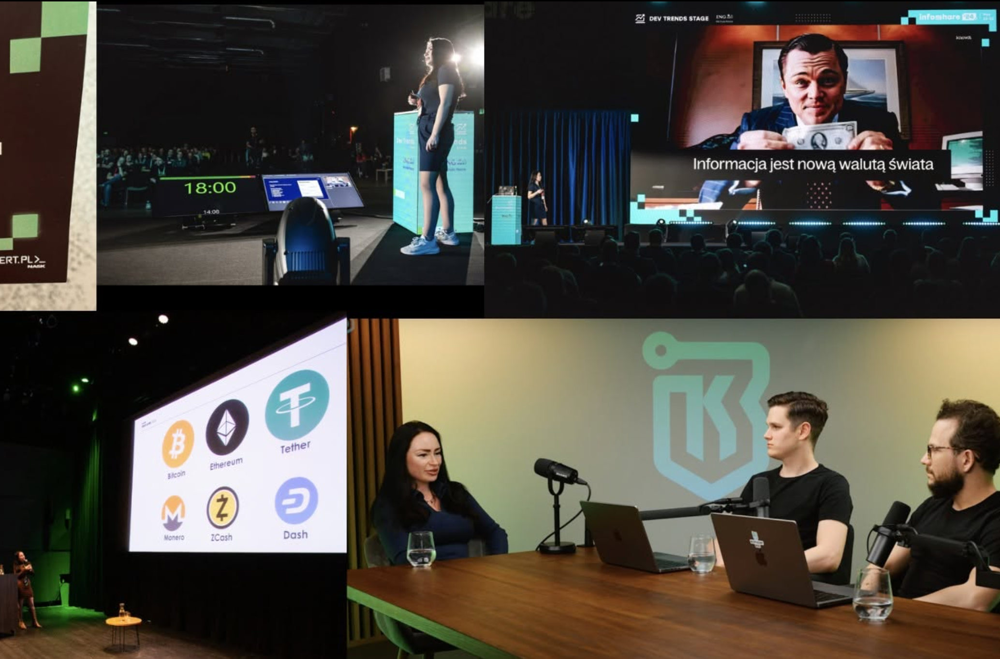

SUKCES
Świat technologii, AI, cyberbezpieczeństwo
Przez lata zbudowałam doświadczenie w cyberbezpieczeństwie, AI, technologii i biznesie. Stworzyłam własny kurs IT z automatyzacji, występowałam na scenach największych konferencji, współorganizowałam konferencję technologiczną, byłam mentorką pomagającą wejść do IT, uczyłam dzieci i dorosłych o świecie technologii.
Ten świat nauczył mnie strategii, logicznego myślenia, odporności i odwagi. Sukces częściowo był efektem ciężkiej pracy, ale również pracy na poziomie energetycznym, pracy nad usuwaniem blokad w mojej głowie, manifestacji i podążania za moimi naturalnymi talentami. To wszystko pozwoliło mi w kilka lat stać się rozpoznawalną w branży i stworzyć bogactwo. Zrozumiałam, że ograniczenia są tylko w naszych głowach.